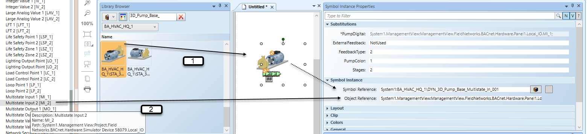
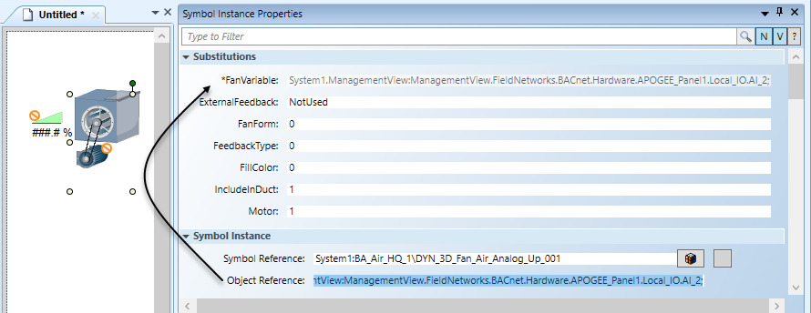
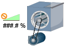
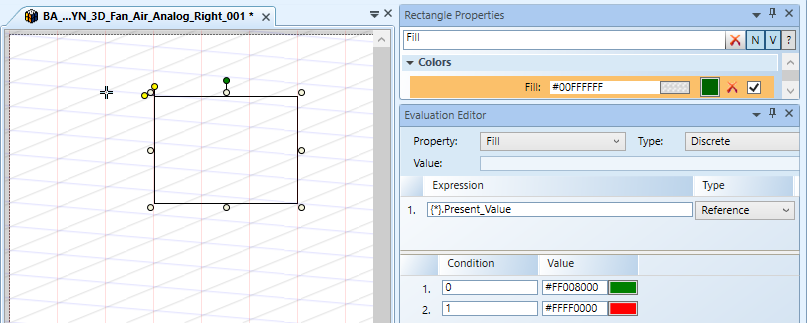
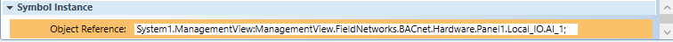
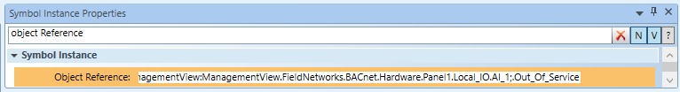
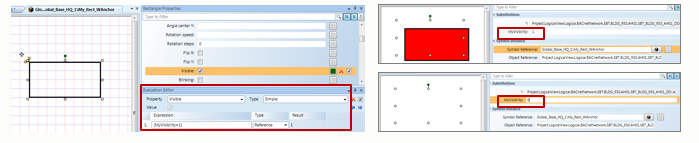
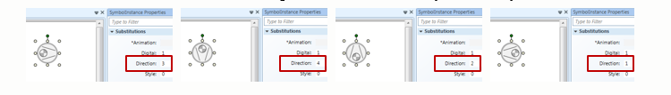

Symbol Object References, Substitutions and Evaluations
Pre-defined symbols are stored in the Library folders of the Management View. These symbols are visible and editable from the Graphics Library Browser. Advanced users create their own Symbols.

NOTE:
You can only create, edit, and delete Symbols in the Graphics application if you have Create level access for the Graphics Library Browser. Create level access is defined in the Security application.
Object to Symbol Association
Object referencing for a Symbol instance on the canvas is manually referenced in the Symbol Instance properties group of the Property View. The Object Reference property allows you to associate the Symbol to an object model property, or a function property.
Manually engineering a Symbol to associate it with an object reference involves:
- Dragging a Symbol onto the canvas to create a Symbol Instance, which provides the Symbol Reference. (1)
- Dragging an object instance from System Browser and dropping it either directly on to the Symbol or into the Object Reference field. (2)

Syntax for Object to Symbol Associations
The easiest way to associate a Symbol to an object is by dragging the object from System Browser over to the Symbol Instance. If you choose to manually enter the object references, you must use the proper syntax to make the associations:
- Association to an Object - Syntax for a Symbol instance associated to an object:
MySystem.MyView:MyTree.MyNode;- Association to an Object with a Specific Model Property - Syntax for a symbol instance associated to an object with a specific Model property:
MySystem.MyView:MyTree.MyNode;.Present_Value- Association to an Object with a Specific Function Property - Syntax for a symbol instance associated to an object with a specific Function property:
MySystem.MyView:MyTree.MyNode;@Cmd
Symbol Instance Property Substitutions
When the Symbol instance is selected on the graphic, the Symbol Instance properties display in the Properties view. Some Symbols come with built-in variations, called substitutions. For example, to change the Symbol’s orientation on the graphic. If a Symbol instance has any allowable variations, the Substitutions section is the first section to display. This section does not display in the Properties view for Symbol instances without substitutions. A Symbol Instance may include one or more substitution variations.
In the Properties view >Substitutions section, the variable property containing a star substitution * before it, is bound to the Symbol Instance > Object Reference value (see below.) When you drag a data point from System Browser and drop it over the Symbol Instance > Object Reference field it is bound to the substitution containing a star substitution “*”.

Substitution Parameters
The other Substitutions properties are writable, variations that affect things like the Symbol Instance direction on the graphic, or the Fill color, or if a duct is included or not, for example. These substitutions, use values entered manually into the fields to determine how they will look.
- Keyword substitution – allows you to take a Symbol instance and orient it on the page when it comes to runtime mode:
- The “Angle” attribute = {Direction=3}
- Name Substitution
- The “Fill” color attribute – {FillColor}
NOTE: Substitutions cannot be viewed in Design Mode. You must be in Test or Runtime mode to see how the variation options affect the Symbol instance on the graphic.
Example
The following fan: DYN_3D_Fan_Air_Analog_Up_001 has the following Substitutions available:
 | |
Substitutions | Set of Values |
*FanVariable | Fan working with analog tags. *This field is populated when you drag-and-drop a data point from System Browser over the Symbol > InstanceObject Reference field. |
FanForm | 0 = Fan form type 1 (Default value) |
FillColor | 0 = Blue (Default value) |
IncludeInDuct | 0 = Duct piece elements invisible (off) |
Motor | 0 = Shows motor and drive belt (Default value) |
About Symbol Property Substitution
Substitution Syntax
A substitution is created by adding brackets {…} into a properties evaluation of a graphic element within a Symbol.
- The syntax for a property substitution is as follows:
Property Prefix {[*] [Substitution Name] [=-SubstitutionDefaultValue]} PropertyPostFix (?)
Star Substitutions
Star {*} substitution is used as the connection between the drag-and-drop, which is the object source reference, and the internal Symbol substitution mapping. A substitution becomes a star-substitution when the name is empty or starts with an asterisk (*). A Symbol can have more than one star-substitution. They are all linked to the Object Reference property and are all read-only. Star-substitutions are read-only. The value can only be modified by changing the Object Reference property.
Star Substitutions can take these three forms:
- {} (This is basically equivalent to {*})
- {*}
- {*DataPoint} or {*Object}
When you drag a data point or Symbol on to a graphic in the Graphics Editor, an associated Symbol instance is placed on the graphic, and the Object Reference property of the Symbol instance is set to the source reference.
NOTE:
The Object Reference property can also be manually changed.
The Object Reference property automatically copies the value to and updates all star (*) substitutions. This resolves all Symbol expressions in the final object references. The references can be seen in the Value Simulator view.
Name and Default Value Substitutions
- Name
- Each substitution has an optional name
- The name is displayed between the braces {Substitution Name}
- The syntax name is not case-sensitive.
- Default Value
- A substitution can - but must not - have a default value.
NOTE: If a Symbol property contains the same substitution more than once, but with different default values, the last non-empty default value is used. - The following characters are not allowed within the substitution brackets: (-) and (})
Substitution Examples | ||
Substitution | Substitution Name | Substitution Default Value |
{Offset} | Offset | (none) |
{offset} | Offset | (none) |
{Value Offset} | Value Offset | (none) |
{Value Offset = } | Value Offset | (none) |
{Value Offset =4} | Value Offset | 4 |
{Value Offset =4} | Value Offset | 4 |
{Value Offset } | Value Offset | (one space) |
{a=b =6} | a | b=6 |
{obj=1} {obj} | obj | 1 |
{obj=1} {obj=2} | obj | 2 |
{} | * | (none) |
{*} | * | (none) |
{*Alarm} | *Alarm | (none) |
Resolved and Unresolved Expressions
If a child element of a symbol instance is selected, the Evaluation Editor displays the original expression along with the resolved expression.
Substitutions in Evaluations
A Star substitution {*} connects a substitution with an object reference. For example, a data point.
There are two forms a star substitution can take:
- {*}
- {*Name}
If there are two star substitutions used in a Symbol, both are connected by the object reference.
For example, {*} and {*Name}.
Evaluations and Extended Star Substitutions
- The star substitution {*} can be extended with an additional term(s)
- A data point’s specific property can be evaluated and the value of that property substituted in the Symbol Instance at runtime
- In the expression, the star substitution is extended with:
- .Property - dot means the property is called from the Object Model
- @Property – ‘at’ sign means the property is called from the Function
- For example: The star substitution {*} in the expression below obtains the Present_Value from the Object Model.

- The object or data point when dragged to the Object Reference field terminates with a semi-colon “;” and evaluates the default property:
- After the semi-colon “;” the specific property that is evaluated can be added to the object reference, for example: .Out_Of_Service


Substitutions Variants
Substitutions can take the following forms: {Name} or {Name=Default Value}, which then require an input that is evaluated and then executed. See the examples below:

The substitution key word {Direction} allows you to change the direction of the active Symbol Instance using the mouse. See example below.
Increments of 0...4 with a combination of the left mouse button pressed and single click of right mouse button. The default direction is given in the substitution {Direction=3}

Extended Substitutions and Generic Symbols
A generic Symbol is a concept that allows you to create one type of Symbol that can support an object that has 1, 2, or more properties with changing values. Depending on the object, the Symbol does not display the elements of the graphic that do not have a data point associated with them.
For example, you want to create one Symbol that you can associate with either a 1-stage pump or a 2-stage pump. In this case, a Symbol for the 2-stage pump is created.
This is done by extending the expression syntax with the use of the question mark “?” in the expression. For each property, you create, you add another:
<data pointRef> | <Value> (‘?’[<DefaultValue> | <Alternatedata pointRef>])*
The table below provides examples of using the “?” in an expression applied to a text element.
Generic Symbol Substitution Syntax Examples | ||
Expression in a Text Element | Substitution if First Reference Exists | Substitution if First Reference does not Exist |
System1:Test_AI_1_1 |
Value of System1:Test_AI_1_1
| #ENG |
System1:Test_AI_1_1? | Hides text element | |
System1:Test_AI_1_1 ? 3.14 | 3.14 | |
System1:Test_AI_1_1?”True” | True | |
System1:Test_AI_1_1 ? False | False | |
System1:Test_AI_1_1 ?System1:Test_AI_1_2 | Value of System1:Test_AI_1_2 | |
System1:Test_AI_1_1? System1:Test_AI_1_2?-5.7 | Value of System1:Test_AI_1_2, if it exists. If it doesn’t exist, -5.7 | |
Notes on Extended Syntax
- The question mark (?) can be used 0..n times, where the default value or alternate data point reference is optional.
- Spaces are allowed to the left or to the right around the question mark.
- The expression uses either the default value to the left of the question mark or the alternate data point reference, following the question mark when the default value does not exist.
- The element is hidden when the default value (to the left of the “?”) does not exist and there is nothing after the question mark. The element is hidden when this applies to any one of the expressions in any evaluation type that is used. This includes the multiple evaluations which can have many expressions.
- In an evaluation expression, multiple substitution terms are entered and separated by a question mark: ?
- For example:
{*};@TemperatureValue ? {*};.Present_Value ? -999 - To optimize performance, the alternate data point reference, the value after the ‘?’, is evaluated only when term to the left cannot be resolved.